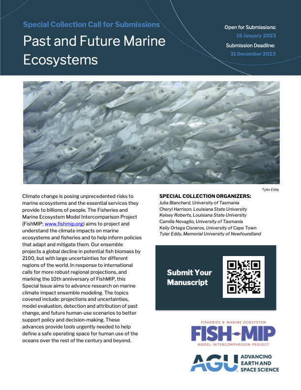

Publications
Call for papers: 10th anniversary FishMIP special issue: : Submit to our special Issue “Past & Future of Marine Ecosystems” in Earth’s Future. We encourage submissions on topics related to advancing the field of marine climate impact model ensembles. Deadline for submissions is 31. December 2023. More details here

Peer-reviewed literature
Cinner, J.E., Thiault, L., Caldwell, I., Ben, J., Blanchard, J.L., Coll, M., Diedrich, A., Eddy, T.D., Everett, J.D., Folberth, C., Gascuel, D., Guiet, J., Gurney, G.G., Heneghan, R., Jägermeyr, J., Jiddawi, N., Lahari, R., Kuange, J., Liu, W., Müller, C., Novaglio, C., Palacios-Abrantes, J., Petrik, C.M., Rabearisoa, A., Steenbeek, J., Tittensor, D.P., Wamukota, A., Pollnac, R. 2022. The potential impacts of climate change on agriculture and fisheries production in 72 tropical coastal communities. Nature Communications, 13, 11.
Petrik, C.M., Luo, J.Y., Heneghan, R.F., Everett, J.D., Harrison, C.S., Richardson, A.J. 2022. Assessment and constraint of mesozooplankton in CMIP6 Earth system models. Global Biogeochemical Cycles, 36, e2022GB007367.
Tittensor, D.P., Novaglio, C., Harrison, C.S. et al.,(2021) Next-generation ensemble projections reveal higher climate risks for marine ecosystems, Nature Climate Change, 11, 973–981
Heneghan, R.F., Galbraith, E., Blanchard, J.L, Harrison, C., Barrier, N., Bulman, C., Cheung, W., Coll, M., Eddy, T.D, Erauskin-Extramiana, M., Everett, J.D., Fernandes-Salvador, J.A., Gascuel, D., Guiet, J., Maury, O., Palacios-Abrantes, J., Petrik, C.M., du Pontavice, H., Richardson, A.J., Steenbeek, J., Tai, T.C., Volkholz, J., Woodworth-Jefcoats, P.A., Tittensor, D.P. 2021. Disentangling diverse responses to climate change among global marine ecosystem models. Progress in Oceanography 198.
Boyce, D. G., Lotze, H. K., Tittensor, D. P., Carozza, D. A., Worm, B. (2020). Future ocean biomass losses may widen socioeconomic equity gaps. Nature Communications, 11: 1-11.
Bryndum-Buchholz, A., Prentice, F., Tittensor, D. P., Blanchard, J. L., Cheung, W. W. L., Christensen, V., Galbraith, E. D., Maury, O. & Lotze, H. K. (2020). Differing marine animal biomass shifts under 21st century climate change between Canada’s three oceans. Facets, 5: 105-122.
Bryndum-Buchholz, A., Boyce, D.G., Tittensor, D.P, Christensen, V., Bianchi, D., & Lotze, H.K. (2020). Climate-change impacts and fisheries management challenges in the North Atlantic<https://doi.org/10.3354/meps13438>. MEPS, 648: 1-17.
Lotze, H. K., Tittensor, D. P., Bryndum-Buchholz, A., Eddy, T. D., Cheung, W. W. L., Galbraith, E. D., Barange, M., Barrier, N., Bianchi, D., Blanchard, J. L., Bopp, L., Büchner, M., Bulman, C. M., Carozza, D. A., Christensen, V., Coll, M., Dunne, J. P., Fulton, E. A., Jennings, S., Jones, M. C., Mackinson, S., Maury, O., Niiranen, S., Oliveros-Ramos, R., Roy, T., Fernandes, J. A., Schewe, J., Shin, Y.-J., Silva, T. A. M., Steenbeek, J., Stock, C. A., Verley, P., Volkholz, J., Walker, N. D., Worm B. (2019). Global ensemble projections reveal trophic amplification of ocean biomass declines with climate change. PNAS, 116: 12907-12912.
Bryndum-Buchholz, A., Tittensor, D. P., Blanchard, J. L., Cheung, W. W. L., Coll, M., Galbraith, E. D., Jennings, S., Maury, O., Lotze, H. K. (2019). Twenty-first century climate change impacts on marine animal biomass and ecosystem structure across ocean basins. Global Change Biology, 25: 459-472.
Tittensor, D. P., Eddy, T. D., Lotze, H. K., Galbraith, E. D., Cheung, W., Barange, M., Blanchard, J. L., Bopp, L., Bryndum-Buchholz, A., Büchner, M., Bulman, C. M., Carozza, D. A., Christensen, V., Coll, M., Dunne, J. P., Fernandes, J. A., Fulton, E. A., Hobday, A. J., Huber, V., Jennings, S., Jones, M. C., Lehodey, P., Link, J. S., Mackinson, S., Maury, O., Niiranen, S., Oliveros-Ramos, R., Roy, T., Schewe, J., Shin, Y.-J., Silva, T., Stock, C. A., Steenbeek, J., Underwood, P. J., Volkholz, J., Watson, J. R., Walter, N. D. (2018). A protocol for the intercomparison of marine fishery and ecosystem models: Fish-MIP v1.0. Geosci. Model Dev., 11: 1421-1442.
Blanchard, J. L., Watson, R. A., Fulton, E. A., Cottrell, R. S., Nash, K. L., Bryndum-Buchholz, A., Büchner, M., Carozza, D. A., Cheung, W. W. L., Elliott, J., Davidson, L. N. K., Dulvy, N. K., Dunne, J. P., Eddy, T. D., Galbraith, E., Lotze, H. K., Maury, O., Müller, C., Tittensor, D. P., Jennings, S.(2017). Linked sustainability challenges and trade-offs among fisheries, aquaculture and agriculture. Nat. Ecol. Evol., 1: 1240-1249.
Fish-MIP contributions to policy documents
IPCC, (2022): Climate Change 2022: Impacts, Adaptation, and Vulnerability.Contribution of Working Group II to the Sixth Assessment Report of the Intergovernmental Panel on Climate Change [H.-O. Pörtner, D.C. Roberts, M. Tignor, E.S. Poloczanska, K. Mintenbeck, A. Alegría, M. Craig, S. Langsdorf, S. Löschke, V. Möller, A. Okem, B. Rama (eds.)]. Cambridge University Press. Cambridge University Press, Cambridge, UK and New York, NY, USA, 3056 pp.,
IPCC (2019). IPCC Special Report on the Ocean and Cryosphere in a Changing Climate. Pörtner, H. O., Roberts, D. C., Masson-Delmotte, V., Zhai, P., Tignor, M., Poloczanska, E., Mintenbeck, K., Nicolai, M., Okem, A., Petzold, J., Rama, B., Weyer, N. (eds.). IPCC, Geneva, Switzerland.
IPCC, (2019): Climate Change and Land: an IPCC special report on climate change, desertification, land degradation, sustainable land management, food security, and greenhouse gas fluxes in terrestrial ecosystems[P.R. Shukla, J. Skea, E. Calvo Buendia, V. Masson-Delmotte, H.-O. Pörtner, D. C. Roberts, P. Zhai, R. Slade, S. Connors, R. van Diemen, M. Ferrat, E. Haughey, S. Luz, S. Neogi, M. Pathak, J. Petzold, J. Portugal Pereira, P. Vyas, E. Huntley, K. Kissick, M. Belkacemi, J. Malley, (eds.)]. IPCC, Geneva, Switzerland.
IPBES (2019) Global assessment report on biodiversity and ecosystem services of the Intergovernmental Science-Policy Platform on Biodiversity and Ecosystem Services. Díaz, S., Settele, J., Brondizio E.S., Ngo, H. T. , Guèze, M., Agard, J., Arneth, A., Balvanera, P., Brauman, K. A., Butchart, S. H. M., Chan, K. M. A., Garibaldi, L. A., Ichii, K., Liu, J., Subramanian, S. M., Midgley, G. F., Miloslavich, P., Molnár, Z., Obura, D., Pfaff, A., Polasky, S., Purvis, A., Razzaque, J., Reyers, B., Chowdhury, R. R., Shin, Y.-J., Visseren-Hamakers, I. J., Willis, K. J., Zayas, C. N. (eds.). IPBES secretariat, Bonn, Germany.